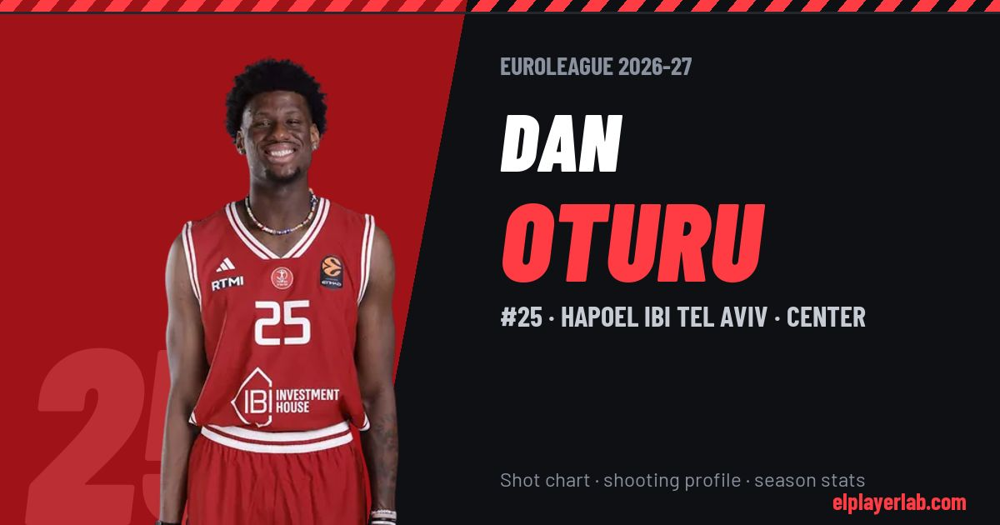

Hapoel IBI Tel Aviv · Euroleague 2026-27
Dan Oturu
#25 · Center · Hapoel IBI Tel Aviv · 2026-27 · 4 games · 9.5 pts · 7.5 reb · 1.0 ast a game

- Number
- 25
- Position
- Center
- Height
- 208 cm
- Weight
- 102 kg
- Born
- 1999-09-20
- Country
- United States of America
Career
- Hapoel TLV 2025-2027
- Anadolu Efes 2024-2025
- Anadolu Efes (loan) 2023-2024
- Yukatel Merkezefendi 2023-2024
- Windy City Bulls 2022-2023
- Toronto Raptors (NBA) 2021-2022
- Windy City Bulls 2021
- Los Angeles Clippers (NBA) 2020-2021
- Minnesota (NCAA) 2018-2020
Euroleague Player Lab: shot charts, shooting profiles and season stats for every player, rebuilt after every game.